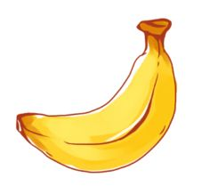

Test CSS Border style
There are lots of different kinds of fruit - there are over 500 varieties of banana alone. By the time we add the countless types of apples,oranges, and other well-known fruit,we are faced with thousands of choices
There are lots of different kinds of fruit - there are over 500 varieties of banana alone. By the time we add the countless types of apples,oranges, and other well-known fruit,we are faced with thousands of choices
